A free, open-source desktop front-end for stable-diffusion.cpp. Manage chat sessions, download and select models, and drive image/video generation through a bundled sd-cli runtime — all in one place.
A clean, JSON-driven desktop app that keeps all behavior easy to configure.
Organize generations into chat sessions with per-session sampling, negative prompt, and image-persistence settings that save automatically.
Browse a searchable catalog of quantized diffusion, VAE, and encoder models from curated Hugging Face and CivitAI sources — download and manage them without leaving the app.
Runs on stable-diffusion.cpp with CUDA/Vulkan or CPU support. Recommended runtime is auto-selected per platform and GPU.
Attach reference images for style adaptation or use a previous output as an init image. Fullscreen lightbox previews every generated image.
Paint a mask over an image to regenerate regions, or expand the frame outward — all with an in-canvas editor, no external image tools required.
Browse, download, and apply LoRA adapters per generation with a management UI and per-session apply mode.
Model lists, sampling defaults, resolutions, and runtime URLs are all driven by JSON files in configurations/ — edit behavior without touching code.
Dark-first interface with a theme picker (Default, Halloween, Christmas) and a polished, resizable layout.
Store tokens for private Hugging Face and CivitAI repos via a built-in Tokens manager — never hand-edited, never logged.
From prompt to pixel in four steps.
Choose a quantized diffusion model (and optional VAE/encoder) from the searchable catalog.
Set a resolution, sampling defaults, and any reference images or prompts.
The main process spawns sd-cli, streams step progress, and writes results to data/output/.
Click any output to open a fullscreen lightbox. Regenerate, edit, or save.
Paint a mask over an image and regenerate the masked region — no external editors.
A focused, dark-first workspace built for model-heavy workflows.
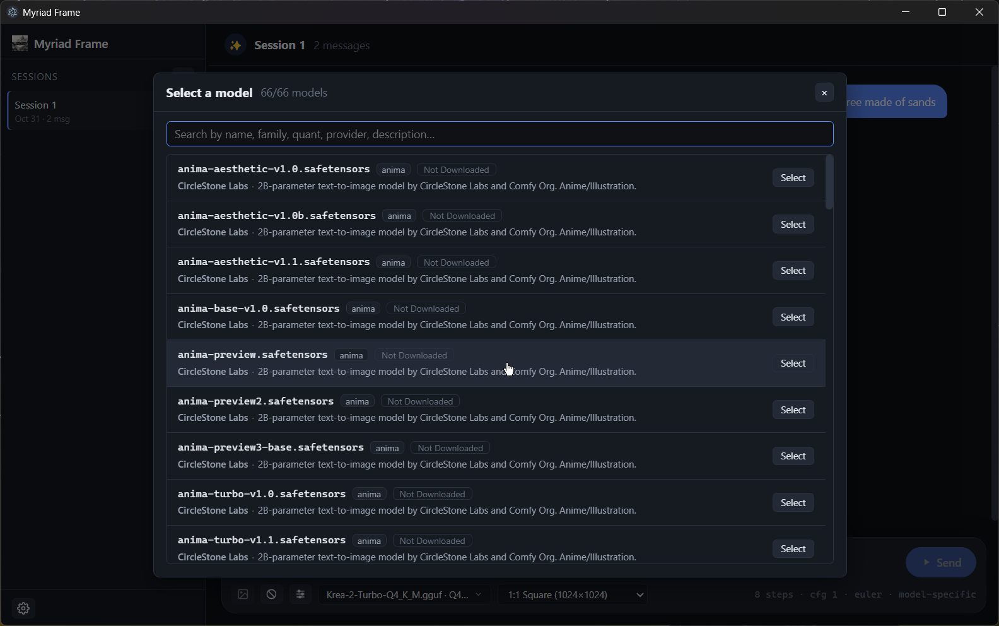
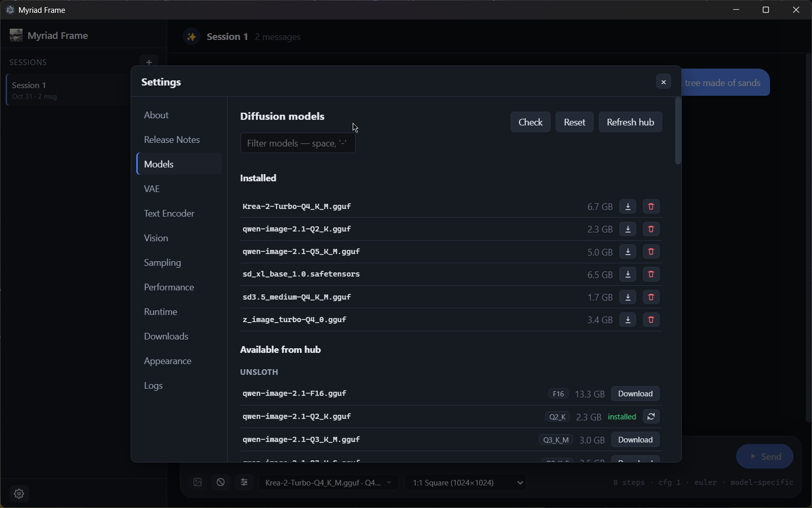
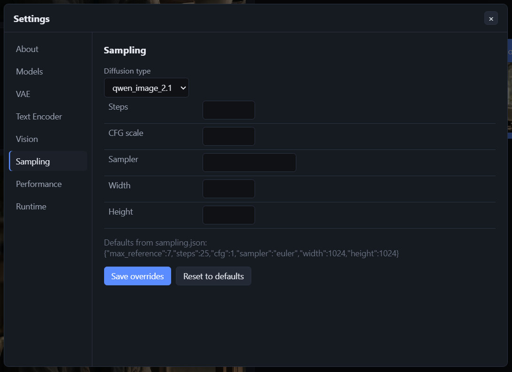
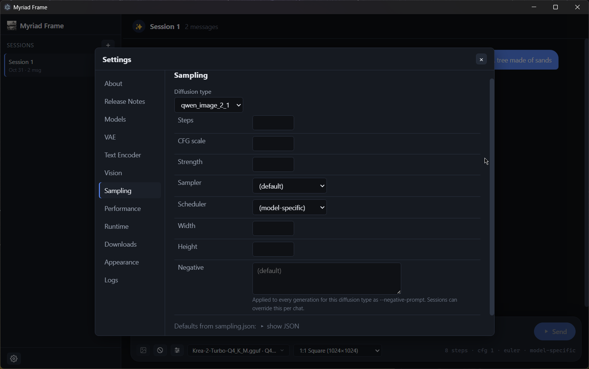
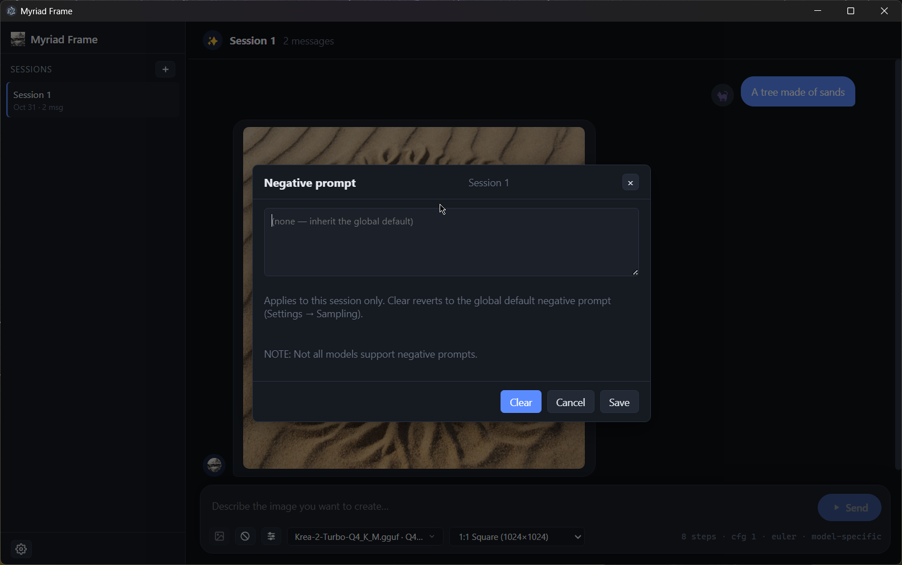
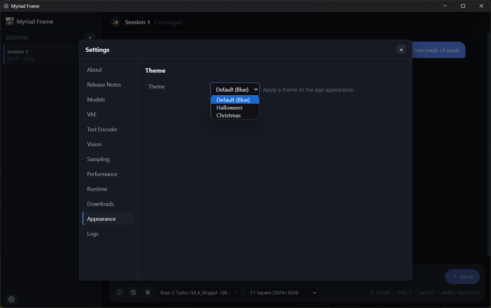
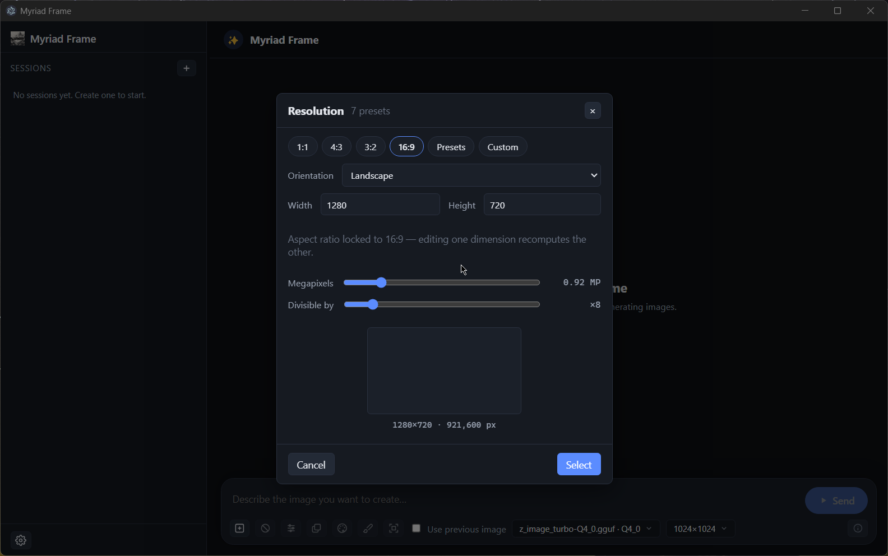
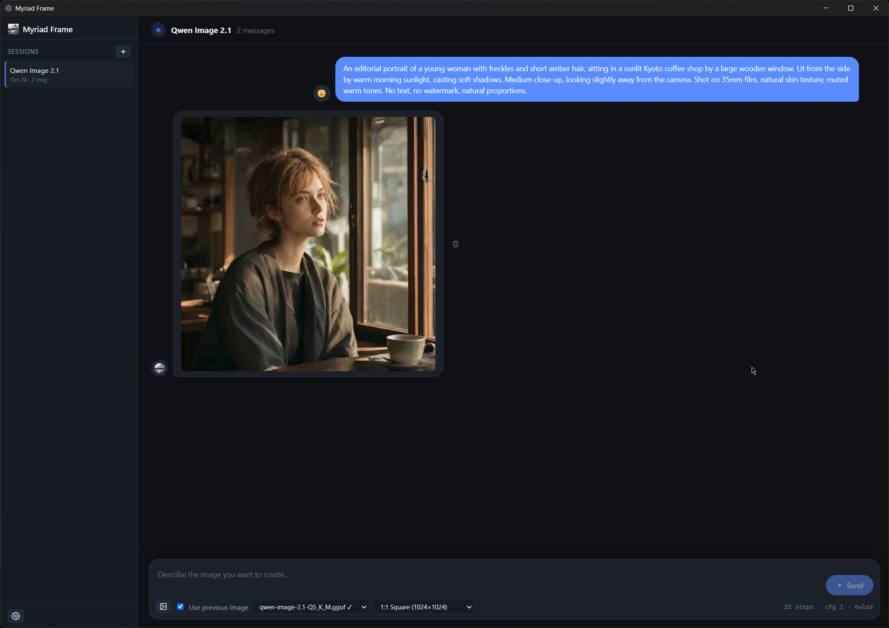
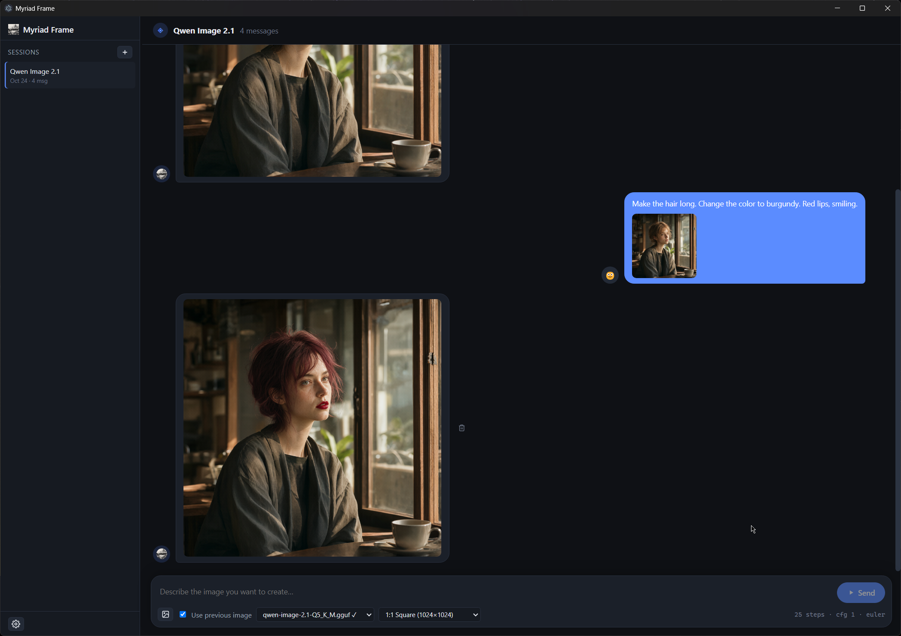
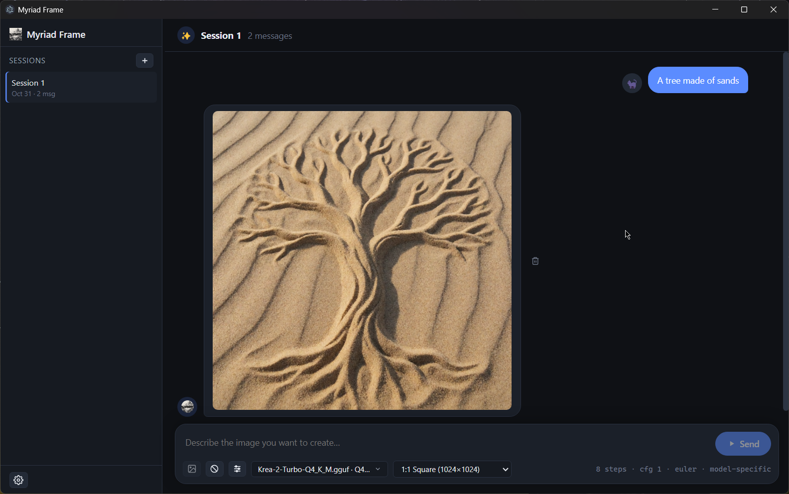
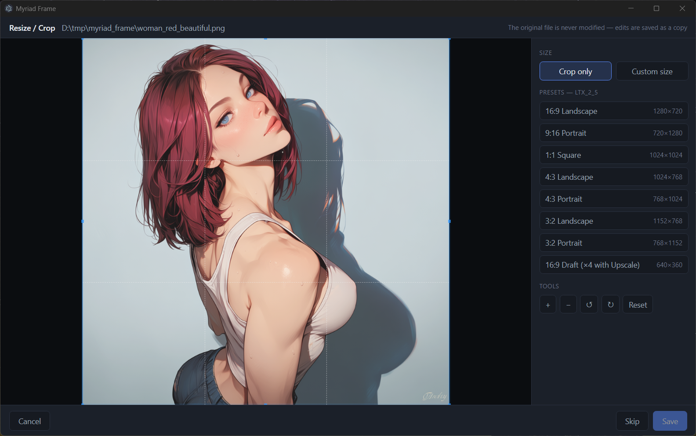
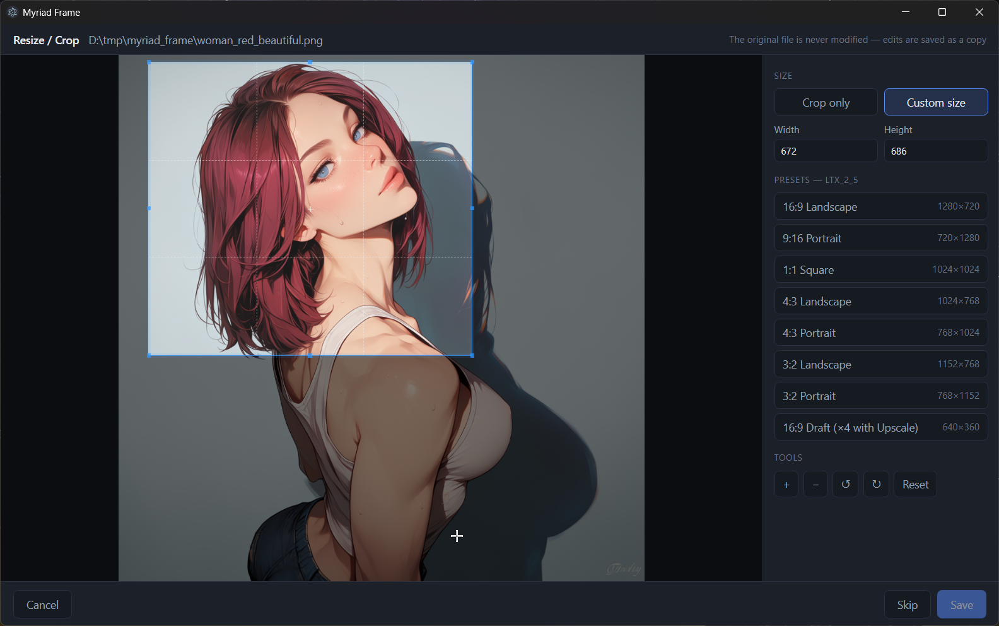
Myriad Frame is free and open-source. Clone the repo and build locally.
# Install dependencies (downloads the Electron binary) npm install # Run in development npm run dev # Build a production bundle to out/ npm run build
Requires Node.js 20+. A GPU (NVIDIA CUDA or Vulkan) is recommended; CPU-only runs are supported but slower.